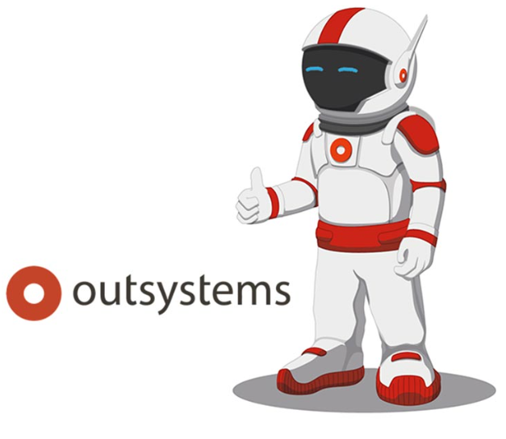

Mary Abad
Full Stack Web Development and Design Student
Professional Summary
Mature, dedicated, detail oriented, self-motivated professional with
well-developed written and verbal communication abilities. A creative,
resourceful problem solver who is able to develop new skills quickly and
work autonomously. Functions effectively as a team member and
independently while performing above and beyond any expectations and
deliver exceptional results.
Currently a self-guided student training for career in full stack web
development and design. Driven to master and excel while increasing
knowledge and skills.

Education
Udemy
-
Web Design for Beginners: Real World Coding in HTML & CSS (Completed
March 2023)
- Modern HTML & CSS From The Beginning (Completed March 2023)
-
Tailwind CSS From Scratch | Learn By Building Projects (Completed Feb
2023)
-
Git & GitHub for Beginners - Master Git and GitHub (Completed Oct 2022)
- The Complete 2023 Web Development Bootcamp (In progress)
- The Modern Javascript Bootcamp Course 2022 (In progress)
-
Python Programming: The Complete Python Bootcamp 2023 (In progress)
OutSystems

- OutSystems Developer Journey (In progress)
St John Adult Day Learning Centre, Ontario, Canada
-
OSSD/Ontario Secondary School Diploma -Graduated June 2020
Niagara Women's Enterprise Centre, Ontario, Canada
-
Computer Technology Career Launch Program (Completed Nov 2019)
-
8-week training and professional development program, delivered in
conjunction with Niagara College, introduced leading edge careers in
technology. Curriculum included Effective Communication Skills,
Empathy and Sensitivity Training.
-
The following certifications were also achieved:
- MS Office (Word, Excel & PowerPoint)
- WHMIS GHS 2015/ 4 Steps to Health and Safety
- Workplace Violence & Sexual Harassment Awareness
- HTML & CSS Coding, JavaScript
Work Experience
Sitel
Group
-
Merchant Dispute Adjudication Team (March 2021- Dec 2021)
- Completed Advanced training and certifications for new position
- Handled and resolved customer complaints through working merchant dispute cases and dispute recovery
cases.
-
Liased with Merchants and Customers regarding Dispute process and
made preliminary decicions regarding elgibility to open dispute
- Collected Evidence from Merchants and Customers
-
Submitted eligible Credit Card disputes to Payment Processor for
Decision
-
Adjudicated Dispute based on decision and informed both
Merchants and Customers of decision and next steps
- Processed Adjudication Decision Appeals
- Adjudicated all other disputes based on evidence and company policies
- Communicated Decisions to Merchants and Customers with next steps
- Processed Adjudication Decision Appeals
- Assisted in cancelling eligible loans.
Senior Agent - Customer Service Representative (Oct 2020 - March 2021)
- Completed Advanced Training and certifications for new position
- Liased with merchants regarding verification of loan elgibility for cancellation
- Assisted in cancelling eligible loans.
- Processed customer account updates requiring validation of identity and other sensitive data
- Maintain accurate and current customer account data with manual forms processing and digital
information updates.
- Answered approximatly 7-8 customer interactions (Calls and Emails) in a hour in a fast-paced environment.
- Liaised with customers, management and sales team to better understand customer needs and recommend
appropriate solutions.
- Offered advice and assistance to customers, paying attention to special needs or wants.
- Documented and detail calls and complaints using call center's CRM database.
- Cultivated customer loyalty, promoted repeat customers and improved sales.
- Evaluated customer information to explore issues, develop potential solutions and maintain high-quality service.
- Detailed payment options and transferred customers to payment department for payment
- Responded to customer requests for loan applications, payment plans, method of payment etc
Mentor for New Agent Training and Senior Agent Training (Dec 2020-Dec 2021)
- Mentored new agents and potential senior agents
- Facilited large group trainings
- Facilitated small group trainings
- Participated in team meetings with other Mentors and Team Lead
- Conducted evaluations of live calls and emails by agents and submitted reports to training lead.
- Provided real-time support for new/upskilling agents during training and certifcation
Support Agent for Phone agents, Senior Agents and Merchant Dispute Adjudication Team (March 2021 - Dec 2021)
- Provided real-time support for agents on active calls and writing emails
- Researched and provided guidance and company policies regarding customer issues
- Created extensive email templates used by other team members to facilitate greater efficiency and accuracy in email communications and prevention of Statutory Compliance failures
Skills
- HTML ★★★
- CSS ★★
- Tailwind CSS ★★
- JavaScript ★
- SQL ★
- Python ★
- Git ★
- OutSystems Development ★
- MicroSoft Office ★★★
Awards & Certifications
- Governor General's Academic Bronze Medal awarded 2020
More About Me
- Member Women Who Code (2020 - present)
- Volunteer Cathedral of St Catharine of Alexandria (2019 - present)
- Volunteer Coding Class Assistant Niagara Women's Enterprise Centre, Ontario, Canada (Feb - March 2020)